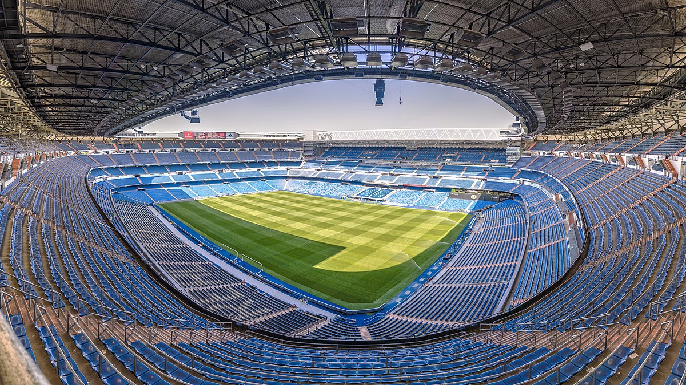
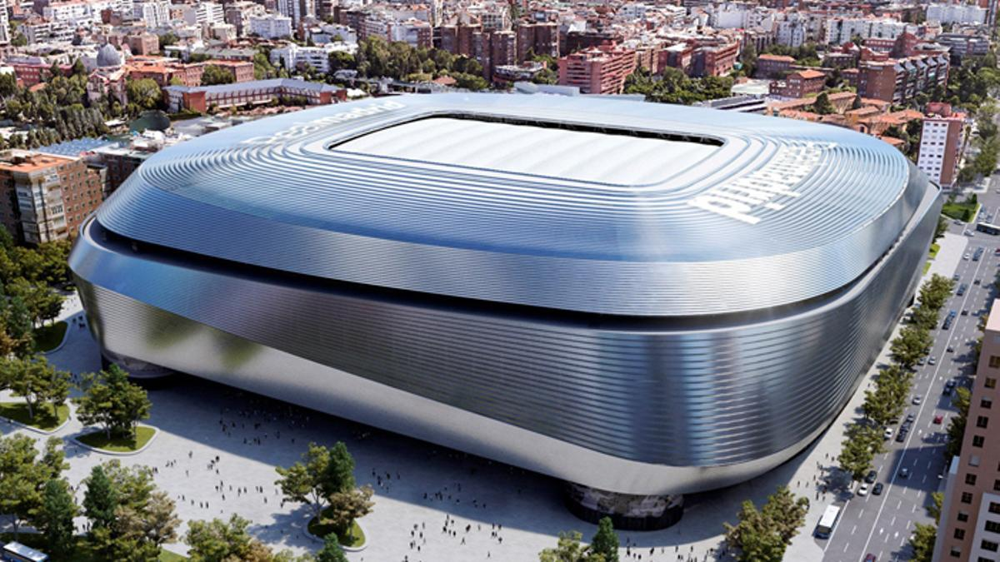

Plaza Mayor:
Esta preciosa plaza rectangular de 129 metros de largo y 94 de ancho,
está rodeada de importantes edificios como la Casa de la Panadería y
otras joyas como el Arco de Cuchilleros y la Estatua de Felipe III, un regalo del Duque de Florencia.
Después de recorrer todos sus rincones, una de las mejores cosas que hacer en Madrid es sentarte en alguna de sus terrazas para tomar algo y
ver el ajetreo diario de turistas o comerte el tradicional bocadillo de calamares en el popular Bar La Campana.
Si tu visita a Madrid es en época navideña, no puedes perderte el mercadillo navideño que se ubica en esta plaza, donde además de los típicos
puestos navideños podrás encontrar los artículos de broma tan característicos en estas fechas, en la capital española.

Mercado San Miguel:
Situado en pleno centro, el Mercado de San Miguel, es un punto de encuentro para los amantes de la buena gastronomía
y uno de los mercados más emblemáticos que ver en Madrid.
Este mercado cubierto se caracteriza por su fantástica arquitectura de hierro y por sus más de 30 puestos que te permiten probar muchos de los productos y
platos típicos de España como el jamón ibérico, el marisco de Galicia o los quesos manchegos, todos de la máxima calidad.
Aunque puedes ir a comer al mediodía, lo más habitual es acercarte a tapear al anochecer cuando hay más ambiente.
Plaza de la Villa:
Al salir del mercado puedes dar una paseo por las calles del conocido como Madrid de los Austrias, en el que destaca la bonita Plaza de la Villa.
Esta plaza es de los pocos rincones de la ciudad que conserva su aspecto medieval con varias construcciones que recuerdan aquella época como la Casa y Torre de Lujanes y la Casa de la Villa, que fue sede del Ayuntamiento
y alberga en su interior la Mariblanca, uno de los iconos de la ciudad. Otros puntos interesantes de esta zona son la Plaza de Santa Cruz, la de San Ginés y la calle del Espejo, la más estrecha de la ciudad.
La Plaza de Cibeles:
Presidida por la preciosa Fuente de las Cibeles, lugar de celebración de los títulos del Real Madrid, es otra de las más emblemáticas que visitar en Madrid.
Además de observar de lejos el carro tirado por leones de la diosa Cibeles, en esta rotonda tienes varios edificios a tener en cuenta como el Palacio de Buenavista, que data del 1777, el Palacio de Linares, el Banco de España y
sobre todo el imponente Palacio de Cibeles, que alberga el ayuntamiento y tiene un fantástico mirador en su terraza que ofrece visitas desde el Parque del Retiro hasta los rascacielos de la zona financiera.
Museo del Prado:
Entre el Retiro y la Fuente de Neptuno, lugar de celebración de los títulos del Atlético de Madrid, se encuentra el Prado, uno de los museos más importantes del mundo y otro de los lugares que visitar en Madrid imprescindibles.
Con miles de interesantes obras, entre las mejores obras que ver en el Museo del Prado se encuentran: Las Tres Gracias de Rubens, El Caballero de la Mano en el Pecho de El Greco, La Maja Desnuda y el El 3 de mayo en Madrid de Goya, El Jardín de las Delicias de El Bosco y la obra maestra de Velázquez,
Las Meninas.La mejor forma de visitar el museo es reservar esta visita guiada con un experto en arte e historia que te permitirá conocer la historia de las principales piezas y con el que además te saltarás las largas colas. Si no quieres hacer una visita guiada te recomendamos reservar esta entrada con antelación para evitar las colas y por el mismo precio que en taquillas.
